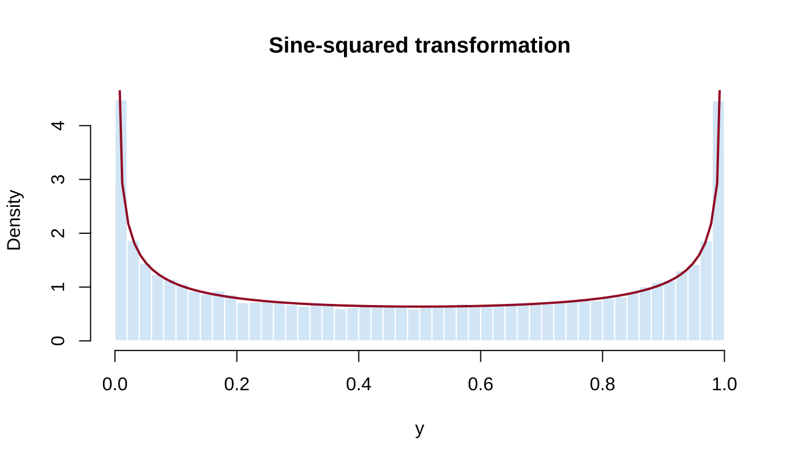

Chapter 2 Transformations and Expectations
This chapter corresponds to chap-2.tex and its four input files. It covers distributions of functions of random variables, expected values, moments and moment generating functions, and differentiation under the integral sign. Clear formula and typographical errors in the source are corrected here and documented in migration_notes.md.
2.1 Distributions of Functions of Random Variables
Let \(X\) have CDF \(F_X\), let \(g:\mathbb R\to\mathbb R\) be Borel measurable, and set \(Y=g(X)\). For every Borel set \(A\),
\[ P(Y\in A)=P\{g(X)\in A\}=P\{X\in g^{-1}(A)\}, \]
where \(g^{-1}(A)=\{x:g(x)\in A\}\). In particular,
\[ F_Y(y)=P(Y\le y)=P\{X\in g^{-1}((-\infty,y])\}. \]
If \(X\) has density \(f_X\), then \(F_Y(y)=\int_{\{x:g(x)\le y\}}f_X(x)\,dx\). If \(X\) is discrete,
\[ p_Y(y)=\sum_{x\in g^{-1}(\{y\})}p_X(x),\qquad y\in\mathcal Y, \]
and \(p_Y(y)=0\) outside \(\mathcal Y\).
2.2 Example 2.1.2: A Sine-Squared Transformation
Let \(X\sim U(0,2\pi)\), so \(f_X(x)=1/(2\pi)\) for \(0<x<2\pi\), and define \(Y=\sin^2X\). Its support is \([0,1]\). For \(0<y<1\), the intervals satisfying \(\sin^2x\le y\) have total length \(4\arcsin\sqrt y\) over one period. Hence
\[ F_Y(y)=\frac{2}{\pi}\arcsin\sqrt y,\qquad f_Y(y)=\frac{1}{\pi\sqrt{y(1-y)}}. \]

Figure 2.1: Source-slide illustration of the multiple branches of the sine-squared transformation
The following R simulation checks the theoretical density.
set.seed(202509)
x <- runif(50000, 0, 2 * pi)
y <- sin(x)^2
hist(y, probability = TRUE, breaks = 50,
col = "#D9EAF7", border = "white",
main = "Sine-squared transformation", xlab = "y")
curve(1 / (pi * sqrt(x * (1 - x))),
from = 0.002, to = 0.998, add = TRUE,
col = "#A51C30", lwd = 2)
Figure 2.2: Simulated and theoretical distributions of Y=sin²(X)
2.3 Support Sets and Monotone Transformations
Definition 2.1 The support of \(X\) and the range induced by the transformation are
\[ \mathcal X=\{x:f_X(x)>0\},\qquad \mathcal Y=\{y:y=g(x)\text{ for some }x\in\mathcal X\}. \]
If \(g\) is strictly increasing, \(F_Y(y)=F_X\{g^{-1}(y)\}\). If \(g\) is strictly decreasing and \(X\) is continuous, \(F_Y(y)=1-F_X\{g^{-1}(y)\}\).
Theorem 2.1 Theorem 2.1.5 (monotone transformation formula). Suppose \(X\) has continuous density \(f_X\), \(Y=g(X)\), \(g\) is monotone, and \(g^{-1}\) is continuously differentiable on \(\mathcal Y\). Then
\[ f_Y(y)= \begin{cases} f_X\{g^{-1}(y)\}\left|\dfrac{d}{dy}g^{-1}(y)\right|,&y\in\mathcal Y,\\ 0,&\text{otherwise}. \end{cases} \]
The absolute value keeps the transformed density nonnegative for both increasing and decreasing transformations.
2.4 Example 2.1.6: A Reciprocal Gamma Transformation
Suppose
\[ f_X(x)=\frac{x^{n-1}e^{-x/\beta}}{(n-1)!\beta^n},\qquad x>0, \]
and let \(Y=1/X\). Here \(g^{-1}(y)=1/y\), \(\mathcal Y=(0,\infty)\), and \(|(g^{-1})'(y)|=1/y^2\). Thus
\[ \begin{aligned} f_Y(y) &=f_X(1/y)\frac1{y^2}\\ &=\frac{1}{(n-1)!\beta^n} \left(\frac1y\right)^{n+1} \exp\left(-\frac1{\beta y}\right),\qquad y>0. \end{aligned} \]
This is a special case of an inverse-gamma density.
2.5 Example 2.1.7: The Square of a Standard Normal
Let \(X\sim N(0,1)\) and \(Y=X^2\). For \(y>0\),
\[ F_Y(y)=P(-\sqrt y\le X\le\sqrt y) =2\Phi(\sqrt y)-1. \]
Differentiation gives
\[ f_Y(y)=\frac{\phi(\sqrt y)}{\sqrt y} =\frac{1}{\sqrt{2\pi y}}e^{-y/2},\qquad y>0, \]
so \(Y\sim\chi_1^2\). The source slides use the normal CDF \(\Phi\) where the normal density \(\phi\) is required; that error is corrected here.
2.6 Piecewise Monotone Transformations
Theorem 2.2 Theorem 2.1.8. Suppose \(P(X\in A_0)=0\), \(P(X\in\bigcup_{i=1}^kA_i)=1\), \(f_X\) is continuous on each \(A_i\), and the restriction of \(g\) to each \(A_i\) is monotone. Let \(g_i^{-1}\) denote the corresponding inverse branch. If each branch is continuously differentiable on \(\mathcal Y\), then
\[ f_Y(y)= \begin{cases} \displaystyle\sum_{i=1}^k f_X\{g_i^{-1}(y)\} \left|\dfrac{d}{dy}g_i^{-1}(y)\right|,&y\in\mathcal Y,\\ 0,&\text{otherwise}. \end{cases} \]
Thus all inverse branches must be added for transformations such as \(Y=\sin^2X\) and \(Y=X^2\).
2.7 The Probability Integral Transform
Theorem 2.3 Theorem 2.1.10. If \(X\) has continuous CDF \(F_X\), then \(Y=F_X(X)\sim U(0,1)\).
When \(F_X\) is strictly increasing, for \(0<y<1\),
\[ \begin{aligned} P(Y\le y) &=P\{F_X(X)\le y\}\\ &=P\{X\le F_X^{-1}(y)\}\\ &=F_X\{F_X^{-1}(y)\}=y. \end{aligned} \]
The generalized inverse gives the result for an arbitrary continuous CDF. This transform underlies random-number generation and many goodness-of-fit procedures.
2.8 Definition and Computation of Expectation
Definition 2.2 Definition 2.2.1. On a probability space \((\mathcal S,\mathcal B,P)\), if \(\int_{\mathcal S}|X|\,dP<\infty\), define
\[ E(X)=\int_{\mathcal S}X\,dP. \]
If \(E|g(X)|<\infty\), the continuous and discrete cases give
\[ E\{g(X)\}=\int_{-\infty}^{\infty}g(x)f_X(x)\,dx, \qquad E\{g(X)\}=\sum_xg(x)p_X(x). \]
This is often called the law of the unconscious statistician (LOTUS). One may instead derive the distribution of \(Y=g(X)\) and calculate \(E(Y)=\int yf_Y(y)\,dy\), but the direct route is usually shorter.
2.9 Examples and Properties of Expectation
- Example 2.2.2: If \(f_X(x)=\lambda^{-1}e^{-x/\lambda}\) for \(x>0\), then \(E(X)=\lambda\); here \(\lambda\) is the scale.
- Example 2.2.3: If \(X\sim\operatorname{Binomial}(n,p)\), then \(E(X)=np\).
- Example 2.2.4: For a standard Cauchy random variable, \(E|X|=\infty\), so \(E(X)\) does not exist. Symmetry cannot cancel two divergent integrals.
Theorem 2.4 Theorem 2.2.5. Whenever the relevant expectations exist:
- \(E\{ag_1(X)+bg_2(X)+c\}=aE\{g_1(X)\}+bE\{g_2(X)\}+c\);
- if \(g_1\ge0\), then \(E\{g_1(X)\}\ge0\);
- if \(g_1\ge g_2\), then \(E\{g_1(X)\}\ge E\{g_2(X)\}\);
- if \(a\le g_1\le b\), then \(a\le E\{g_1(X)\}\le b\).
When the second moment exists, the mean is the best constant center under squared loss:
\[ \arg\min_cE(X-c)^2=E(X),\qquad \min_cE(X-c)^2=\operatorname{Var}(X). \]
2.10 Moments, Central Moments, and MGFs
Definition 2.3 Definition 2.3.1. The \(n\)th raw and central moments are
\[ \mu_n'=E(X^n),\qquad \mu_n=E\{(X-\mu)^n\},\quad\mu=E(X). \]
In particular, \(\operatorname{Var}(X)=\mu_2\) and the standard deviation is \(\sqrt{\operatorname{Var}(X)}\).
If the variance is finite, \(\operatorname{Var}(aX+b)=a^2\operatorname{Var}(X)\).
Definition 2.4 Definition 2.3.6. If it is finite in a neighborhood of \(t=0\),
\[ M_X(t)=E(e^{tX}) \]
is the moment generating function (MGF) of \(X\).
Theorem 2.5 Theorem 2.3.7. If \(M_X\) exists in a neighborhood of zero, then \(E(X^n)=M_X^{(n)}(0)\).
When differentiation and integration may be interchanged, \(M_X^{(n)}(t)=E(X^ne^{tX})\); setting \(t=0\) proves the result.
2.11 Equal Moments Need Not Determine a Distribution
Example 2.3.10. Consider
\[ f_1(x)=\frac{1}{\sqrt{2\pi}x} \exp\left\{-\frac{(\log x)^2}{2}\right\},\qquad x>0, \]
and \(f_2(x)=f_1(x)\{1+\sin(2\pi\log x)\}\). If \(X_1\sim f_1\), then \(E(X_1^r)=e^{r^2/2}\) for integer \(r\ge0\). For \(X_2\sim f_2\),
\[ E(X_2^r)=E(X_1^r)+ \int_0^\infty x^rf_1(x)\sin(2\pi\log x)\,dx. \]
After the substitution \(y=\log x-r\), the extra term vanishes by oddness together with \(\sin(2\pi r)=0\). Thus two different distributions have the same moments of every nonnegative integer order.
Theorem 2.6 Theorem 2.3.11. Suppose all moments of \(F_X\) and \(F_Y\) exist.
- If both supports are bounded, then \(F_X=F_Y\) if and only if \(E(X^r)=E(Y^r)\) for every nonnegative integer \(r\).
- If their MGFs exist and agree in a neighborhood of zero, then \(F_X=F_Y\).
2.12 MGF Convergence and Two Classical MGFs
Theorem 2.7 Theorem 2.3.12. If there is a \(\delta>0\) such that \(M_{X_i}(t)\to M_X(t)\) for \(t\in[-\delta,\delta]\), and \(M_X\) is an MGF, then \(F_{X_i}(x)\to F_X(x)\) at every continuity point of \(F_X\).
This result supports distributional convergence arguments such as proofs of the central limit theorem. For the binomial and Poisson distributions,
\[ M_{\operatorname{Bin}(n,p)}(t)=\{pe^t+(1-p)\}^n, \]
\[ M_{\operatorname{Poi}(\lambda)}(t) =\sum_{x=0}^{\infty}e^{tx}\frac{e^{-\lambda}\lambda^x}{x!} =\exp\{\lambda(e^t-1)\}. \]
n <- 12
p <- 0.3
mgf_binom <- function(t) (1 - p + p * exp(t))^n
h <- 1e-5
c(numerical_derivative =
(mgf_binom(h) - mgf_binom(-h)) / (2 * h),
theoretical_mean = n * p)## numerical_derivative theoretical_mean
## 3.6 3.62.13 Example 2.3.13: The Poisson Approximation
Let \(X_n\sim\operatorname{Binomial}(n,p_n)\) and suppose \(np_n\to\lambda\). Then
\[ \begin{aligned} M_{X_n}(t) &=\{1+p_n(e^t-1)\}^n\\ &=\left\{1+\frac{(e^t-1)(np_n)}n\right\}^n\\ &\longrightarrow\exp\{\lambda(e^t-1)\}. \end{aligned} \]
The limit is the MGF of \(\operatorname{Poisson}(\lambda)\), so \(X_n\) converges in distribution to that Poisson law. For large \(n\), small \(p\), and moderate \(np\), binomial probabilities may therefore be approximated by Poisson probabilities. The source states equality; it is corrected here to an approximation or limiting statement.
2.14 Leibniz’s Rule and Dominated Convergence
Theorem 2.8 Theorem 2.4.1 (Leibniz’s rule). Under suitable continuity and integrable-dominance conditions,
\[ \begin{aligned} \frac{d}{d\theta}\int_{a(\theta)}^{b(\theta)}f(x,\theta)\,dx ={}&f\{b(\theta),\theta\}b'(\theta) -f\{a(\theta),\theta\}a'(\theta)\\ &+\int_{a(\theta)}^{b(\theta)} \frac{\partial}{\partial\theta}f(x,\theta)\,dx. \end{aligned} \]
For constant limits, only the integral term remains.
Theorem 2.9 Theorem 2.4.2. If \(h(x,y)\to h(x,y_0)\) and an integrable function \(g\) satisfies \(|h(x,y)|\le g(x)\) in a neighborhood of \(y_0\), then
\[ \lim_{y\to y_0}\int h(x,y)\,dx =\int\lim_{y\to y_0}h(x,y)\,dx. \]
The essential condition is an integrable bound independent of \(y\).
2.15 Differentiation Under the Integral Sign
Theorem 2.10 Theorem 2.4.3. Suppose \(f(x,\theta)\) is differentiable at \(\theta_0\). If there are \(\delta>0\) and an integrable \(g(x,\theta_0)\) such that, for \(|\Delta|\le\delta\),
\[ \left|\frac{f(x,\theta_0+\Delta)-f(x,\theta_0)}{\Delta}\right| \le g(x,\theta_0), \]
then
\[ \left.\frac{d}{d\theta}\int f(x,\theta)\,dx\right|_{\theta=\theta_0} =\int\left.\frac{\partial}{\partial\theta}f(x,\theta) \right|_{\theta=\theta_0}\,dx. \]
A common corollary applies when \(|\partial f/\partial\theta|\) is uniformly bounded by an integrable function near \(\theta_0\).
Example 2.4.6. If \(X\sim N(\mu,1)\),
\[ M_X(t)=\frac1{\sqrt{2\pi}}\int_{-\infty}^{\infty} e^{tx}e^{-(x-\mu)^2/2}\,dx, \]
then, under the theorem’s conditions, \(M_X'(t)=E(Xe^{tX})\). Completing the square gives \(M_X(t)=\exp(\mu t+t^2/2)\) and hence \(M_X'(0)=\mu\). Interchanging operations is not automatic and must be justified.
2.16 Interchanging Series with Differentiation and Integration
Theorem 2.11 Theorem 2.4.8. If \(\sum_{x=0}^{\infty}h(\theta,x)\) converges on \((a,b)\), each partial derivative is continuous, and the derivative series converges uniformly on every closed bounded subinterval, then
\[ \frac{d}{d\theta}\sum_{x=0}^{\infty}h(\theta,x) =\sum_{x=0}^{\infty}\frac{\partial}{\partial\theta}h(\theta,x). \]
Theorem 2.12 Theorem 2.4.10. If \(\sum_{x=0}^{\infty}h(\theta,x)\) converges uniformly on \([a,b]\) and every term is continuous, then
\[ \int_a^b\sum_{x=0}^{\infty}h(\theta,x)\,d\theta =\sum_{x=0}^{\infty}\int_a^b h(\theta,x)\,d\theta. \]
2.17 Chapter Summary
First identify the transformed support, then derive the distribution by the CDF method, a Jacobian formula, or a sum over inverse branches. Prefer LOTUS for expectations when possible. MGFs connect moments and distributions. Before interchanging limits, derivatives, integrals, or sums, verify domination or uniform convergence.
Exercise prompt: Re-derive the supports and densities for \(Y=X^2\), \(Y=1/X\), and \(Y=\sin^2X\), and compare the CDF method with the transformation formula.